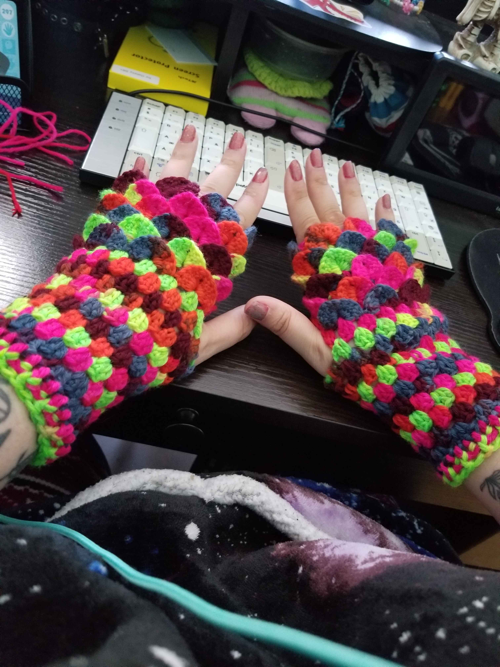

Bison's den
Bison's den


The beginnings
For now you can find my art on my social media linked in contact. But I'll start posting new stuff as I make it!
The latest thing I made was these lovely wool mittens! I bought the yarn while I was in Helsinki for the first time :D
